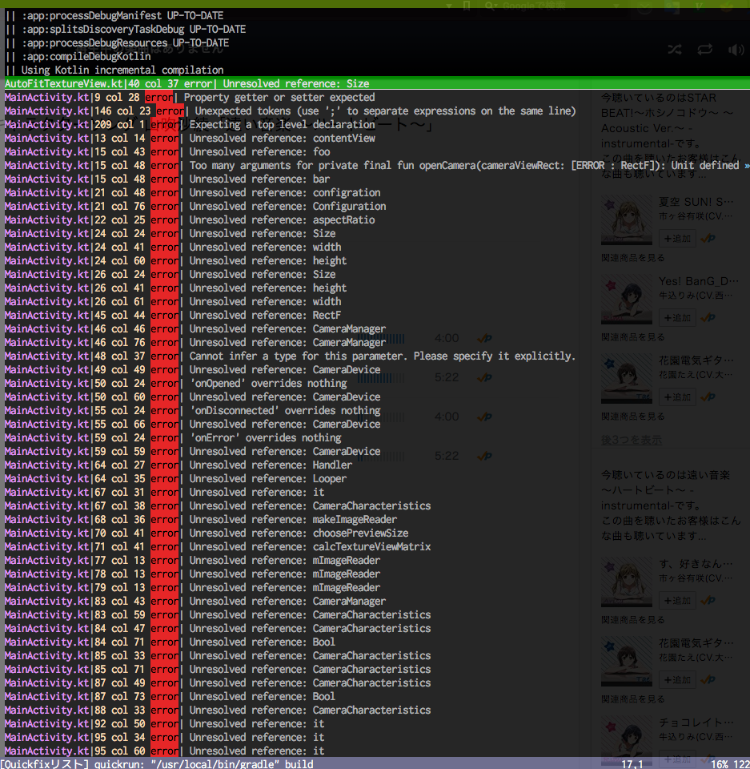

gradle buildの出力をVimのQuickFixに表示してエラー箇所にジャンプする
vim-quickrunに依存する。

result
.vimrcに以下を記述。
let g:quickrun_config = {
\ 'gradle_build': {
\ 'runner': 'vimproc',
\ 'outputter': 'quickfix',
\ 'command': 'gradle',
\ 'cmdopt': 'build',
\ 'exec': '%c %o',
\ },
\}.vim/after/ftplugin/kotlin.vim や .vim/after/ftplugin/java.vim に以下を記述。
let &errorformat = '%t: %f: (%l\, %c): %m' あとは.ktや.javaのファイル内で :QuickRun gradle_build すると 上記画像のように表示されるので、 <C-m> キーなどを押すと 当該ファイル内の当該エラー箇所にカーソルがジャンプするはず。
なお、確認はkotlin (.kt、つまりfiletype=kotlin）のみ行った。
筆者の場合は以下のような補助関数、補助keymapを追加した。
.vim/after/ftplugin/kotlin.vim
let &errorformat = '%t: %f: (%l\, %c): %m'
nnoremap <buffer><silent> <localleader><localleader>r :<C-u>call <SID>quickrun_gradle_build()<CR>
function! s:quickrun_gradle_build() abort
let current_dir = fnameescape(execute('pwd')[1:])
echo 'gradle build is started'
CdGitRoot
QuickRun gradle_build
execute 'cd' current_dir
endfunction.vim/plugins/vimrc.vim
command! -bar CdGitRoot execute ':cd' system('git rev-parse --show-toplevel')まとめ
.vimrc
let g:quickrun_config = {
\ 'gradle_build': {
\ 'runner': 'vimproc',
\ 'outputter': 'quickfix',
\ 'command': 'gradle',
\ 'cmdopt': 'build',
\ 'exec': '%c %o',
\ },
\}.vim/plugins/vimrc.vim
command! -bar CdGitRoot execute ':cd' system('git rev-parse --show-toplevel').vim/after/ftplugin/kotlin.vim
let &errorformat = '%t: %f: (%l\, %c): %m'
nnoremap <buffer><silent> <localleader><localleader>r :<C-u>call <SID>quickrun_gradle_build()<CR>
function! s:quickrun_gradle_build() abort
let current_dir = fnameescape(execute('pwd')[1:])
echo 'gradle build is started'
CdGitRoot
QuickRun gradle_build
execute 'cd' current_dir
endfunction
この記事はこちらから修正リクエストを送ることができます。
gradle buildの出力をVimのQuickFixに表示してエラー箇所にジャンプする - github
ゴミ箱ボタンの左にある、鉛筆ボタンを押してね！